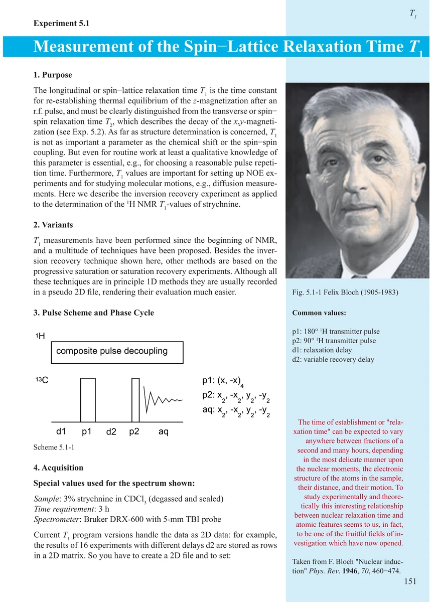
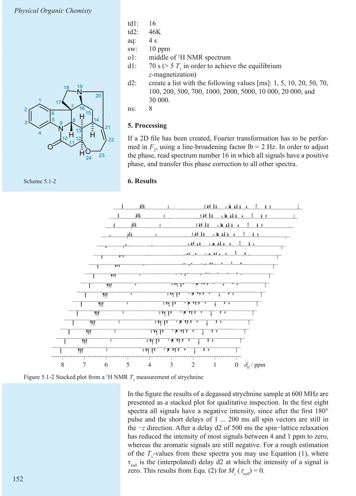
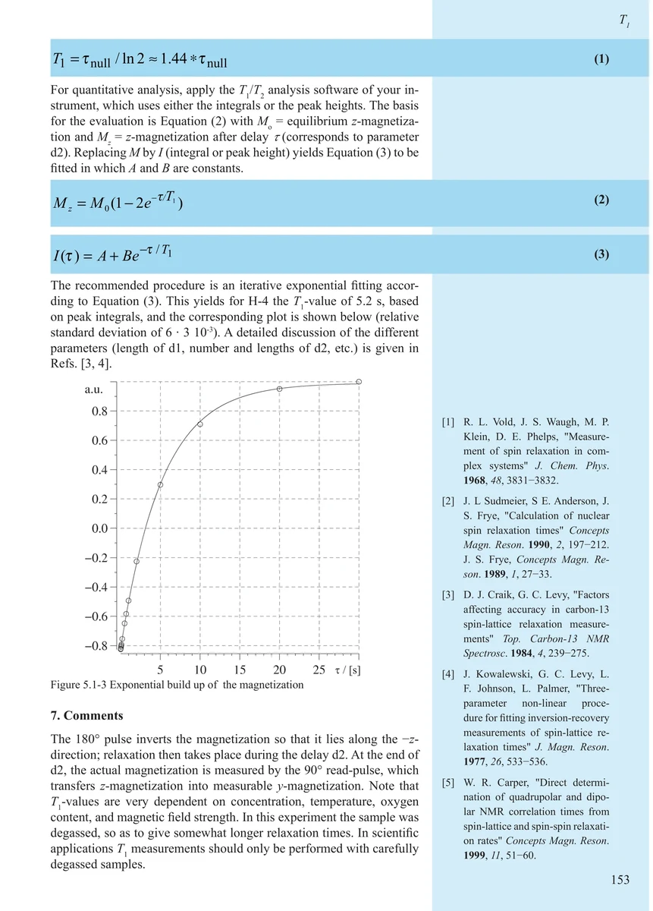
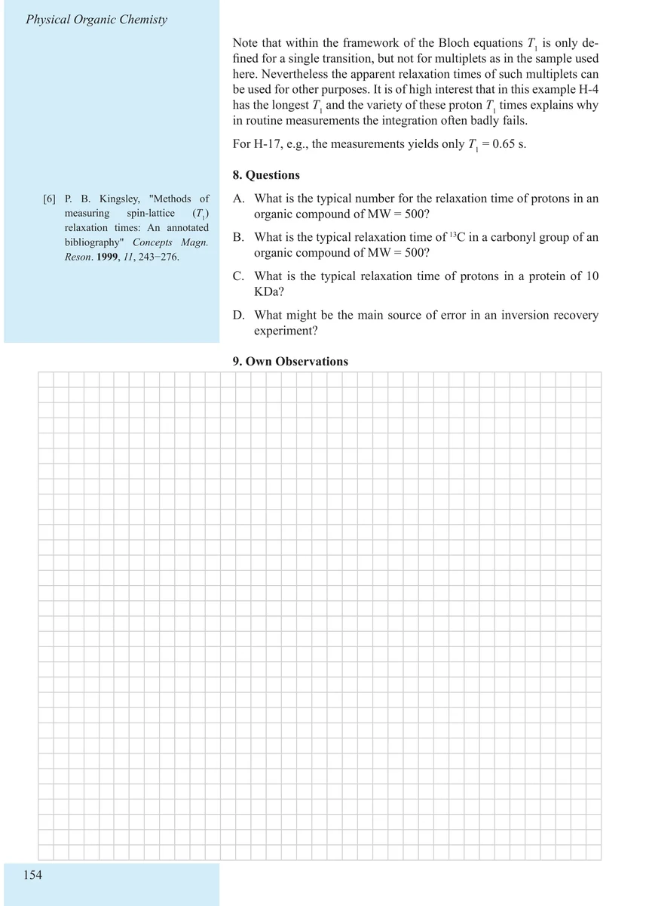

Item 5.1
Measurement of the Spin–Lattice Relaxation Time T1
自旋—晶格弛豫时间 T₁ 的测量
PDF 161–164 · 原书 151–154 · Experiments in Physical Organic Chemistry




核磁共振实验方法、脉冲序列与谱图实践
Item 5.1
自旋—晶格弛豫时间 T₁ 的测量
PDF 161–164 · 原书 151–154 · Experiments in Physical Organic Chemistry



